2025 SuperNationals VIII: A Once-in-Four-Years Chess Spectacle
This migrated post preserves the original rendered output. The original R Markdown source is available as source.Rmd.
Statistics of the 2025 SuperNationals VIII in Orlando
https://www.uschess.org/results/2025/sn8/
Overview of Participation
Over 5,300 contestants from 47 states participated in the 2025 SuperNationals VIII
- 4,600 K-12 students competed across 26 sections
- 1,100 contestants (23% of the 4,600) played in the six championship sections
- Additionally, 700 players took part in the Blitz tournament
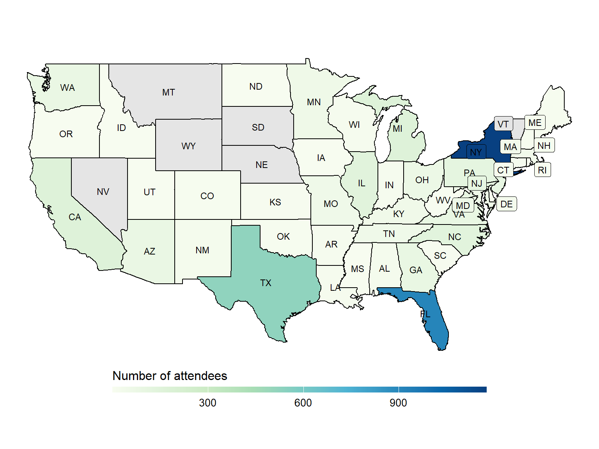
The 26 sections covering K-12 grades attracted over 4,600 attendees from 47 states. There are 1,174 attendees (25%) from New York, followed by Florida with 910 attendees (20%) and Texas with 523 attendees (11%). Over half of the attendees are from these three states.
Structure of the Tournament
One major difference between the 2025 SuperNationals and the 2024 Nationals is how the sections are organized. While the 2024 Nationals featured 13 sections divided solely by grade (K through 12), the 2025 SuperNationals divided players by both grade and rating, resulting in 26 sections. See the previous article - analysis of the 2024 Nationals.
Interesting highlights
-
Championship sections were offered for six grade groups: K1, K3, K5, K6, K8, and K12—with K5 having only one Championship section
-
The K12 U1600 section had the highest number of players, with over 300 participants
-
In the K8 grade group, sections U700, U900, U1100, and U1400 all attracted a similar number of contestants
The number of attendees by broad grade group and the sections available to each group
| Broad group | Available sections | Number of attendees |
|---|---|---|
| K1 | K1 U500, K1 Championship | 416 |
| K3 | K3 U600, K3 U1000, K3 Championship | 668 |
| K5 | K5 Championship | 213 |
| K6 | K6 Unrated, K6 U600, K6 U800, K6 U1000, K6 U1200, K6 U1400, K6 Championship | 1218 |
| K8 | K8 Unrated, K8 U700, K8 U900, K8 U1100, K8 U1400, K8 U1700, K8 Championship | 1053 |
| K12 | K12 Unrated, K12 U800, K12 U1200, K12 U1600, K12 U1900, K12 Championship | 1064 |
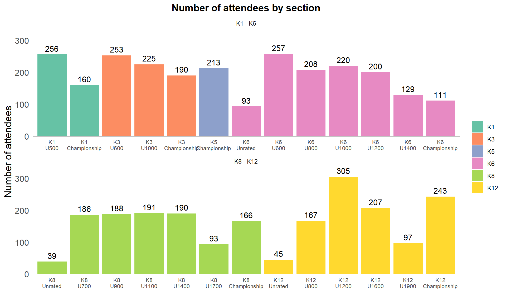
When pooling all the attendees, Grade 5 stands out as the grade with the highest number of participants, distributed across various sections.
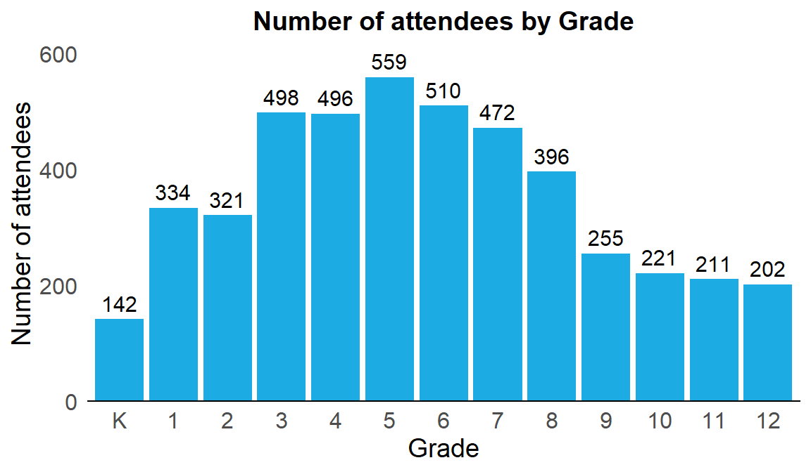
Which sections are students from each grade playing in?
-
The heatmap below displays the number of attendees from each grade in every section (counts are shown within the cells)
-
Notably, the K12 Championship section includes players from Grade 3 through Grade 12!
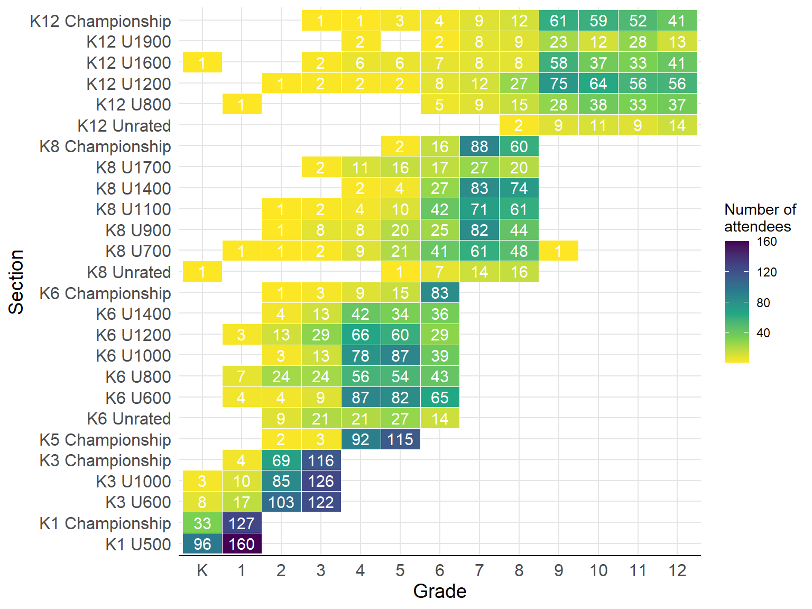
Rating and Standing
-
Among the more than 4,300 rated participants (excluding unrated players), the average rating is 976, with a median of 933 and a standard deviation of 493
-
Approximately 90% of players have ratings between 230 and 1,901
- Unrated players are shown as 0 in the histogram below, though they are excluded from the summary statistics
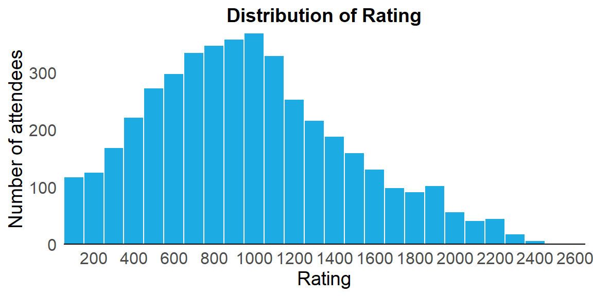
The plot below presents the distribution of ratings across grades (including all sections). The red bar indicates the mean, while the black bar in each boxplot marks the median. The overall distribution is only slightly right-skewed, with the mean close to the median—especially in the lower grades.
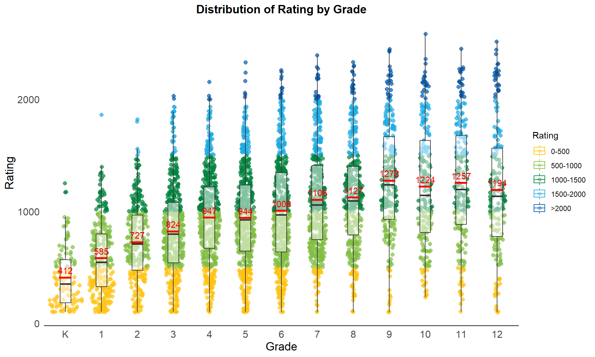
Rating by section
-
In the K3, K6, K8, and K12 groups, there is a clear clustering of ratings based on the bounded sections. For example, in K3, a child with a 1000 rating placed in the Championship section is likely to face very challenging competition
-
The average ratings of the K6, K8, and K12 Championship sections are relatively close. Interestingly, the K12 Championship section has an average rating quite similar to that of the K8 Championship
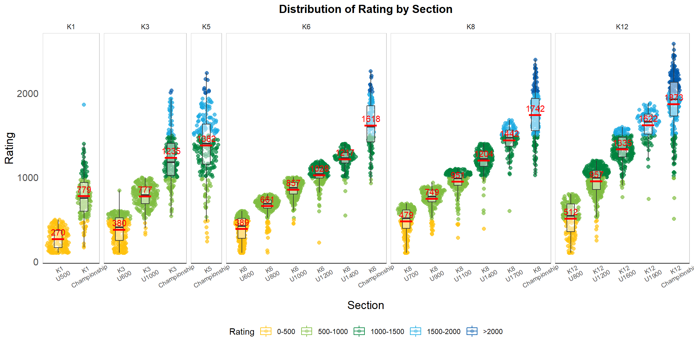
Rating by section and grade
-
As expected, players from different grades in bounded sections (e.g., U600, U1000) tend to have similar mean ratings and general distribution
-
In the K3 Championship, Grade 3 players generally have slightly higher ratings than Grade 2 players, though the difference is not very significant
-
In the K5 Championship, Grade 4 and Grade 5 players show similar rating distributions, with Grade 4’s mean rating being slightly higher
-
(Only grades with at least 10 attendees per section are plotted below)
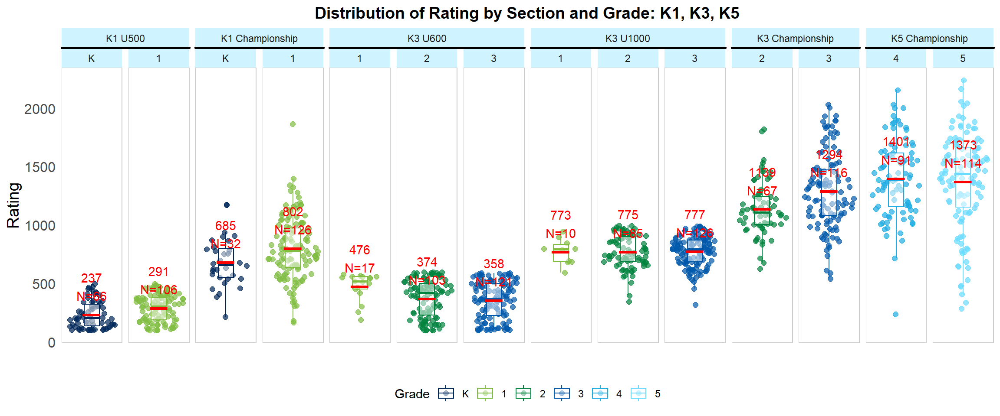
- Most Grade 5 players who chose to compete in a championship section opted for K5 Championship, resulting in only 15 Grade 5 participants in the K6 Championship
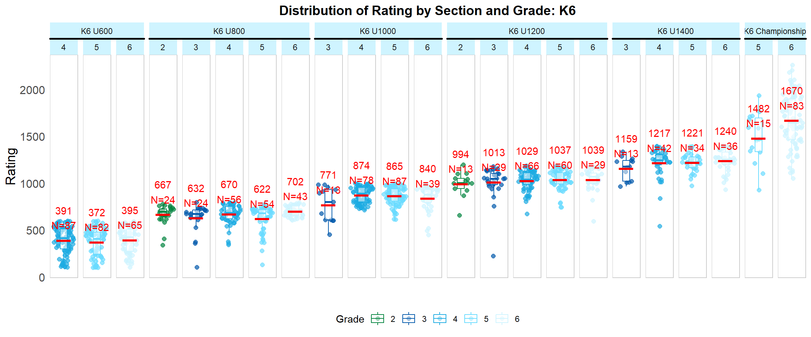
- A number of Grade 6 players (though not a large number) chose to compete in the K8 sections rather than K6
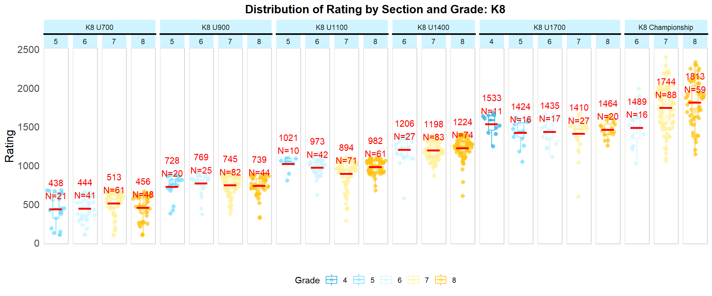
- The K12 Championship is the largest championship section, as it includes players from Grades 9 through 12. Its average rating is only slightly higher than that of the K8 or K6 Championship sections
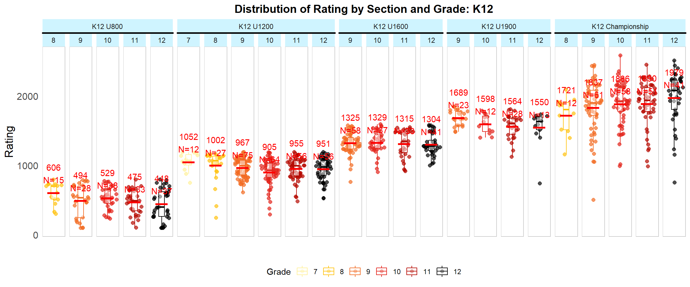
Does a higher rating guarantee a higher standing?
The reasonably strong association between standing and rating percentiles within each section is observed only in the Championship sections. The R-squared value from a fitted linear regression is approximately 0.71. As discussed in the previous article for 2024 Nationals, the R-squared value was similarly high at 0.75.
Again, this indicates that the relationship isn’t as robust as it might initially appear. There is substantial variation in standing within each rating percentile. Outliers—such as cases where a high-ranked player drops out mid-match—further weaken the correlation.
The red lines in the chart represent a LOESS curve, providing a non-linear fit.
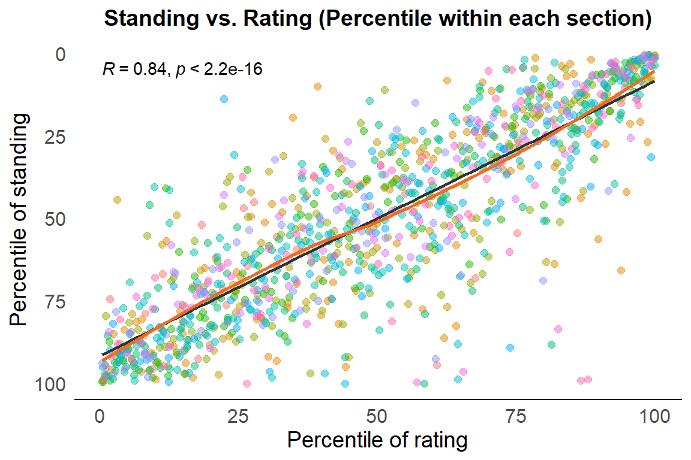